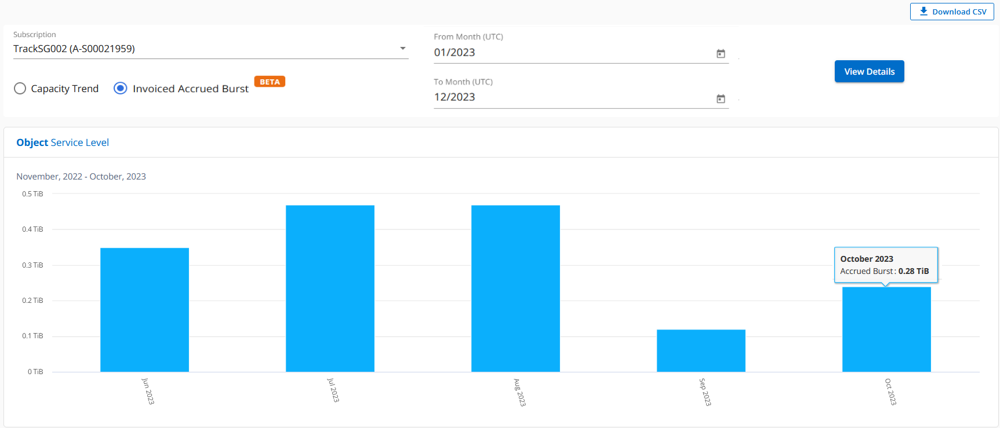
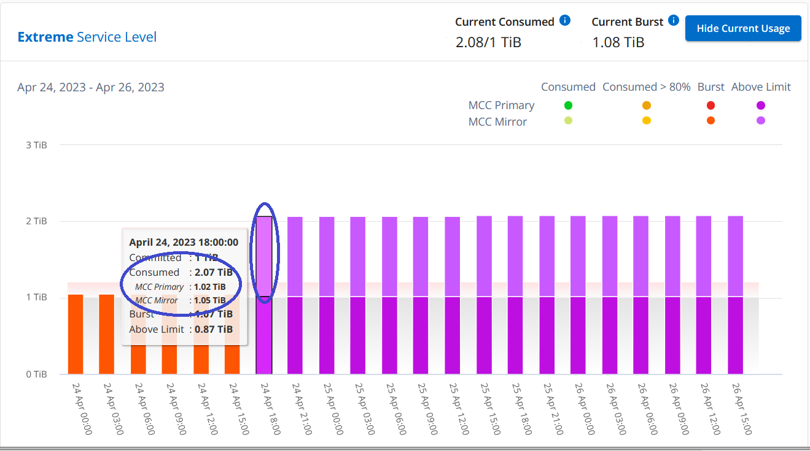
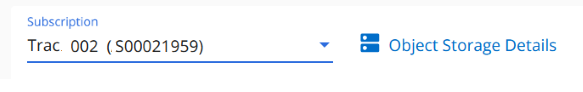
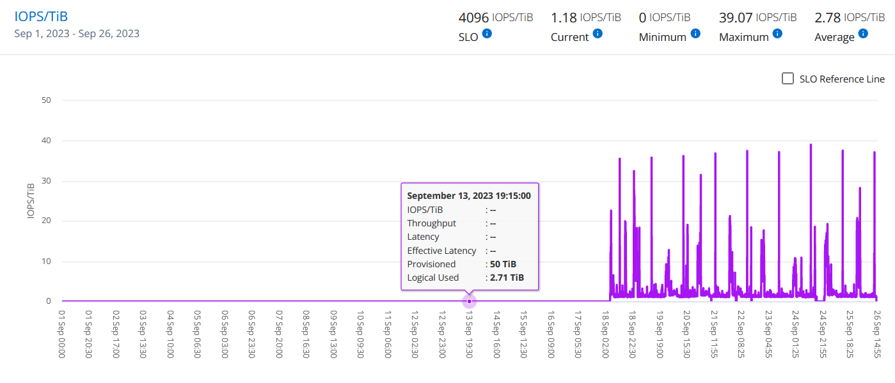
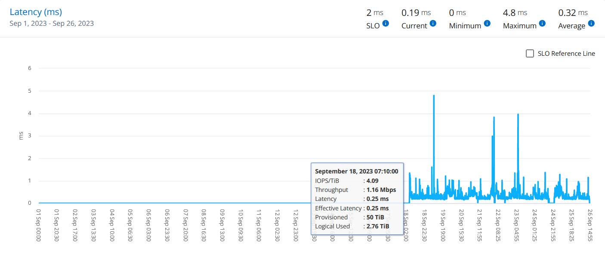
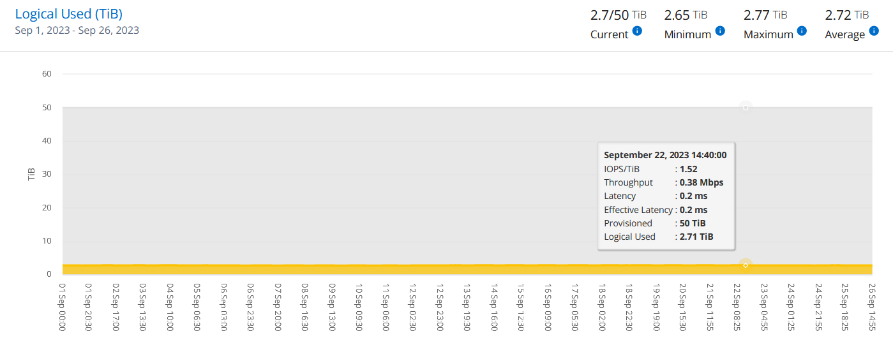

Servizi NetApp Keystone
Servizi NetApp Keystone
Dashboard di Digital Advisor e reporting per Keystone
 Suggerisci modifiche
Suggerisci modifiche
Il dashboard di Consulente digitale Active IQ consente di monitorare l'utilizzo delle sottoscrizioni NetApp Keystone e di generare report. Se ti iscrivi ai servizi Keystone, puoi visualizzare i dettagli dell'abbonamento e dell'utilizzo nel widget Abbonamenti Keystone della dashboard di Digital Advisor.

|
Le informazioni qui disponibili si applicano sia a ONTAP che a StorageGRID. Le eccezioni sono state evidenziate nelle sezioni pertinenti. |
Per informazioni sul widget di Keystone Digital Advisor, vedere "Visualizza l'utilizzo della capacità con l'abbonamento NetApp Keystone".
Per visualizzare i dettagli dell'abbonamento e dell'utilizzo di Keystone, attenersi alla seguente procedura:
-
Accedere a Digital Advisor. Puoi vedere il widget Keystone Subscriptions che riepiloga l'utilizzo della capacità rispetto ai servizi Keystone acquistati.
-
Nel widget Abbonamenti Keystone, fare clic su Visualizza ulteriori dettagli per visualizzare i dettagli di utilizzo e gli avvisi sui volumi nella pagina Abbonamenti Keystone. In alternativa, dal riquadro di navigazione a sinistra, andare a GENERAL > Keystone Subscriptions (GENERALE > Abbonamenti Keystone).
I dettagli degli abbonamenti, i grafici di utilizzo per ciascun livello di servizio e i dettagli del volume sono visualizzati nelle diverse schede della schermata Abbonamenti Keystone.
|
|
Il consumo di capacità nelle sottoscrizioni Keystone viene visualizzato in Tibers su dashboard e report e arrotondato a due cifre decimali. Se l'utilizzo è inferiore a 0.01 TIB, il valore viene visualizzato come 0 oppure No Usage. I dati di queste schermate vengono visualizzati in ora UTC (fuso orario del server). Quando si immette una data per la query, questa viene automaticamente considerata nel fuso orario UTC.
|
Per informazioni sulle metriche di utilizzo, vedere "Metriche e definizioni dei livelli di servizio". Per informazioni sulle diverse capacità utilizzate in Keystone, vedere "Definizioni della capacità del servizio Keystone".
Abbonamenti
È possibile visualizzare un elenco delle sottoscrizioni nella scheda Sottoscrizioni.

È possibile visualizzare le seguenti informazioni. Per alcuni campi e colonne, è possibile visualizzare informazioni o icone di avvertenza e descrizioni dei comandi che forniscono informazioni aggiuntive sui dati.
-
Subscription Number: Il numero di abbonamento Keystone assegnato da NetApp.
-
Tracking ID: L'ID di tracciamento assegnato al momento dell'attivazione dell'abbonamento. Si tratta di un ID univoco per ciascun abbonamento e sito, utilizzato per tenere traccia dell'abbonamento.

Se il tuo abbonamento ha un livello di servizio di protezione dati o un piano tariffario assegnato, una descrizione comandi ti aiuta a identificare l'ID di rilevamento dell'abbonamento partner in una configurazione MetroCluster. Per informazioni su come visualizzare il consumo dettagliato delle sottoscrizioni dei partner in una configurazione MetroCluster, vedere "Diagrammi di riferimento per la protezione dei dati". -
Tipo di utilizzo: Potresti aver sottoscritto più abbonamenti Keystone (versione 1) o Keystone STaaS (versione 2). Le regole del piano tariffario per i livelli di servizio possono variare in base ai due tipi di abbonamento. Osservando il valore di questa colonna, è possibile sapere se il tipo di utilizzo viene fatturato in base all'utilizzo logico o di provisioning per entrambi
v1oppurev2. Per ulteriori informazioni su Keystone STaaS, vedere "Documentazione Keystone STaaS". -
Billing Period (periodo di fatturazione): Il periodo di fatturazione dell'abbonamento, ad esempio mensile, trimestrale o annuale.
-
Data di inizio: La data di inizio dell'abbonamento.
-
Data di fine: Data di fine dell'abbonamento. Se si dispone di un abbonamento mensile fatturabile che viene rinnovato automaticamente ogni mese, viene visualizzato
Month-on-monthanziché la data di fine. In base a questa data, potrebbero essere visualizzati messaggi informativi per le sottoscrizioni in scadenza o con criteri di rinnovo automatico allegati. -
Usage Status (Stato utilizzo): Indica la quantità di abbonamento utilizzata o utilizzata in eccesso. È possibile ordinare l'elenco in base a questa colonna se si desidera visualizzare i record di consumo più elevato.
-
 : Facendo clic su questa icona per un abbonamento, viene aperta la scheda uso corrente con ulteriori dettagli sull'abbonamento.
: Facendo clic su questa icona per un abbonamento, viene aperta la scheda uso corrente con ulteriori dettagli sull'abbonamento. -
 : Facendo clic su questa icona si apre la scheda tendenza capacità, in cui è possibile visualizzare i dati cronologici di utilizzo per ciascun livello di servizio incluso in questo abbonamento.
: Facendo clic su questa icona si apre la scheda tendenza capacità, in cui è possibile visualizzare i dati cronologici di utilizzo per ciascun livello di servizio incluso in questo abbonamento.
Per verificare lo stato di utilizzo di ciascun abbonamento, fare riferimento ai seguenti indicatori di utilizzo:

: Nessun utilizzo della capacità registrato rispetto alla capacità impegnata del livello di servizio
: Il consumo è normale, entro il 80% della capacità impegnata
 : Consumo massimo, ovvero l'utilizzo sta per raggiungere il 100% o più della capacità impegnata. La colonna consumato visualizza questo indicatore per qualsiasi consumo superiore al 80% della capacità impegnata
: Consumo massimo, ovvero l'utilizzo sta per raggiungere il 100% o più della capacità impegnata. La colonna consumato visualizza questo indicatore per qualsiasi consumo superiore al 80% della capacità impegnata
 : Il consumo rientra nel limite di burst. Il consumo burst è il consumo che supera il 100% della capacità impegnata di un livello di servizio e rientra nel limite di utilizzo burst concordato, ad esempio il 120%
: Il consumo rientra nel limite di burst. Il consumo burst è il consumo che supera il 100% della capacità impegnata di un livello di servizio e rientra nel limite di utilizzo burst concordato, ad esempio il 120%
 Indica un consumo superiore al limite di burst stabilito
Indica un consumo superiore al limite di burst stabilito
Utilizzo corrente
Per conoscere i dettagli delle sottoscrizioni, fare clic sulla scheda uso corrente e selezionare il numero di abbonamento richiesto.

I dettagli, come il nome del livello di servizio, le capacità assegnate, consumate, disponibili e l'utilizzo corrente e accumulato burst, sono visualizzati in TIB.
|
|
Il |
Per informazioni sui servizi di storage Keystone e sui relativi livelli di servizio, vedere "Livelli di servizio".
Tendenza capacità
La scheda tendenza capacità visualizza i dati storici delle sottoscrizioni Keystone per un periodo specifico. I grafici verticali visualizzano i dettagli di utilizzo per l'intervallo di tempo selezionato con gli indicatori appropriati per il confronto e la generazione di report.
-
Fare clic sulla scheda Trend capacità.
-
Selezionare l'abbonamento richiesto per il quale si desidera visualizzare i dettagli. Per impostazione predefinita, viene selezionato il primo abbonamento nel nome dell'account.
-
Selezionare tendenza capacità se si desidera visualizzare i dati storici e analizzare la tendenza di utilizzo della capacità. Selezionare Burst maturato fatturato se si desidera visualizzare i dati di utilizzo burst storici, per i quali sono state generate le fatture. È possibile utilizzare questi dati per analizzare l'utilizzo fatturato in base alla fattura.
Visualizzare il trend di capacità
Scopri di più
Se è stata selezionata l'opzione Trend capacità, procedere come segue:
-
Selezionare l'intervallo di tempo dalle icone del calendario nei campi Data e Data. Selezionare l'intervallo di date per la query. L'intervallo di date può essere l'inizio del mese o la data di inizio dell'abbonamento alla data corrente o la data di fine dell'abbonamento. Non è possibile selezionare una data futura.
Per ottenere prestazioni ottimali e un'esperienza utente ottimale, limitare l'intervallo di date della query a tre mesi. -
Fare clic su View Details (Visualizza dettagli). I dati di consumo cronologici dell'abbonamento per ciascun livello di servizio vengono visualizzati in base all'intervallo di tempo selezionato.
I grafici a barre visualizzano il nome del livello di servizio e la capacità consumata rispetto a tale livello di servizio per l'intervallo di date. La data e l'ora della raccolta vengono visualizzate nella parte inferiore del grafico. In base all'intervallo di date della query, i grafici di utilizzo vengono visualizzati in un intervallo di 30 punti di raccolta dati. Puoi spostare il cursore del mouse sui grafici per visualizzare la suddivisione dell'utilizzo in termini di dati impegnati, consumati, burst e superiori al limite burst in quel punto di raccolta dati.

I seguenti colori nei grafici a barre indicano la capacità consumata come definita nel livello di servizio. I dati mensili attraverso i grafici sono separati da una linea verticale.
-
Verde: Entro il 80%.
-
Ambra: 80% - 100%.
-
Rosso: Utilizzo burst (100% della capacità impegnata fino al limite burst concordato)
-
Viola: Al di sopra del limite di burst o.
Above Limit.
|
|
Un grafico vuoto indica che non sono disponibili dati nell'ambiente in quel punto di raccolta dati. |
È possibile fare clic sul pulsante di attivazione/disattivazione Mostra utilizzo corrente per visualizzare i dati relativi a consumo, utilizzo burst e burst di accantonamento per il periodo di fatturazione corrente. Questi dettagli non sono basati sull'intervallo di date della query.
-
Corrente assorbita: Indicatore della capacità consumata (in TIB) definita per il livello di servizio. Questo campo utilizza colori specifici:
-
Nessun colore: Utilizzo burst o burst superiore.
-
Grigio: Nessun utilizzo.
-
Verde: Entro il 80% della capacità impegnata.
-
Ambra: 80% della capacità di burst impegnata.
-
-
Current Burst: Indicatore della capacità consumata entro o al di sopra del limite di burst definito. Qualsiasi utilizzo entro il limite di burst concordato, ad esempio il 20% al di sopra della capacità impegnata, rientra nel limite di burst. L'utilizzo ulteriore viene considerato come utilizzo superiore al limite di burst. Questo campo visualizza colori specifici:
-
Nessun colore: Nessun utilizzo di burst.
-
Rosso: Utilizzo burst.
-
Viola: Al di sopra del limite di burst.
-
-
Bursting maturato: Indicatore dell'utilizzo bursting maturato o della capacità consumata calcolata al mese per il periodo di fatturazione corrente. L'utilizzo del burst accumulato viene calcolato in base alla capacità impegnata e consumata per un livello di servizio:
(consumed - committed)/365.25/12.
Visualizza bursting maturato fatturato
Scopri di più
Se è stata selezionata l'opzione Burst maturato fatturato, per impostazione predefinita, è possibile visualizzare i dati mensili sull'utilizzo dei bursting maturati negli ultimi 12 mesi che sono stati fatturati. È possibile eseguire una query in base all'intervallo di date fino agli ultimi 30 mesi. I grafici a barre vengono visualizzati per i dati fatturati e, se l'utilizzo non è ancora stato fatturato, viene visualizzato Pending per quel mese.
|
|
L'utilizzo dei bursting maturati fatturati viene calcolato per periodo di fatturazione in base alla capacità impegnata e consumata per un livello di servizio. |

Questa funzionalità è disponibile in una modalità di sola anteprima. Contattare il proprio KSM per ulteriori informazioni su questa funzione.
Diagrammi di riferimento per la protezione dei dati
Scopri di più
Se si è abbonati al servizio di protezione dei dati, è possibile visualizzare la suddivisione dei dati di consumo per i siti partner MetroCluster nella scheda tendenza capacità.
Per informazioni sulla protezione dei dati, vedere "Protezione dei dati".
Se i cluster nel tuo ambiente di storage ONTAP sono configurati in una configurazione MetroCluster, i dati di consumo dell'iscrizione Keystone vengono suddivisi nello stesso grafico dei dati storici per visualizzare il consumo nei siti primario e di mirroring per i livelli di servizio di base.
|
|
I grafici a barre dei consumi sono suddivisi solo per i livelli di servizio di base. Per i livelli di servizio di protezione dei dati, questa delimitazione non viene visualizzata. |
Per i livelli di servizio di protezione dei dati, il consumo totale viene suddiviso tra i siti partner e l'utilizzo in ciascun sito partner viene riflesso e fatturato in un abbonamento separato, ovvero un abbonamento per il sito primario e un altro per il sito mirror. Per questo motivo, quando si seleziona il numero di abbonamento per il sito primario nella scheda tendenza capacità, i grafici di consumo per i livelli di servizio DP visualizzano i dettagli di consumo discreti solo per il sito primario. Poiché ogni sito partner in una configurazione MetroCluster agisce come origine e mirror, il consumo totale di ogni sito include i volumi di origine e mirror creati in quel sito.
|
|
La descrizione dei comandi accanto all'ID di modifica dell'abbonamento nella scheda utilizzo corrente consente di identificare l'abbonamento partner nella configurazione di MetroCluster. |
Per i livelli di servizio di base, ciascun volume viene addebitato come provisioning nei siti primario e mirror, quindi lo stesso grafico a barre viene suddiviso in base al consumo nei siti primario e mirror.
L'immagine seguente mostra i grafici relativi al livello di servizio Extreme (livello di servizio di base) e al numero di abbonamento primario. Lo stesso grafico dei dati storici contrassegna il consumo del sito mirror in una tonalità più chiara del codice colore utilizzato per il sito primario. Il suggerimento del mouse mostra la disgregazione dei consumi (in TIB) per i siti primario e mirror, rispettivamente 1.02 TIB e 1.05 TIB.

Per il livello di servizio Data-Protect Extreme (livello di servizio di protezione dei dati), i grafici appaiono come segue:

Quando si controlla l'abbonamento secondario, è possibile vedere che il grafico a barre per il livello di servizio Extreme (livello di servizio di base) nello stesso punto di raccolta dati del sito partner viene invertito e la disgregazione dei consumi nei siti primario e mirror è rispettivamente di 1.05 TIB e 1.02 TIB.

Per il livello di servizio Data-Protect Extreme (livello di servizio di protezione dei dati), il grafico viene visualizzato nello stesso punto di raccolta del sito del partner:

Per informazioni su come MetroCluster protegge i dati, consulta "Comprensione della protezione dei dati e del disaster recovery di MetroCluster".
Volumi e oggetti
Nella scheda volumi e oggetti, è possibile visualizzare il consumo e altri dettagli per i volumi in ONTAP. Per StorageGRID, questa scheda visualizza i nodi e il loro utilizzo individuale nell'ambiente di storage a oggetti.
|
|
Il nome di questa scheda varia in base alla natura della distribuzione presso il sito. Se si dispone sia di volumi che di storage a oggetti, è possibile visualizzare la scheda volumi e oggetti. Se nell'ambiente di archiviazione sono presenti solo volumi, il nome cambia in volumi. Per l'archiviazione di oggetti, è possibile visualizzare la scheda oggetti. |
Visualizza i dettagli del volume ONTAP
Scopri di più
Per ONTAP, la scheda volumi visualizza informazioni come l'utilizzo della capacità, il tipo di volume, il cluster, l'aggregato e il livello di servizio dei volumi nel tuo ambiente storage gestito dall'iscrizione Keystone.
-
Fare clic sulla scheda Volumes (volumi).
-
Selezionare il numero dell'abbonamento. Per impostazione predefinita, viene selezionato il primo numero di abbonamento disponibile.
Vengono visualizzati i dettagli del volume. È possibile scorrere le colonne e ottenere ulteriori informazioni facendo clic con il mouse sulle icone delle informazioni accanto alle intestazioni delle colonne. È possibile ordinare in base alle colonne e filtrare gli elenchi per visualizzare informazioni specifiche.
Per i servizi di protezione dei dati, viene visualizzata una colonna aggiuntiva per indicare se il volume è un volume primario o mirror nella configurazione di MetroCluster. È possibile copiare i numeri di serie dei singoli nodi facendo clic sul pulsante Copy Node Serials (Copia serie nodi).

Visualizza i nodi del StorageGRID e il consumo
Scopri di più
Per StorageGRID, questa scheda visualizza l'utilizzo logico per i nodi per lo storage a oggetti.
-
Fare clic sulla scheda oggetti.
-
Selezionare il numero dell'abbonamento. Per impostazione predefinita, viene selezionato il primo numero di abbonamento disponibile. Selezionando il numero di abbonamento, viene attivato il collegamento per i dettagli dello storage a oggetti.

-
Fare clic sul collegamento per visualizzare i nomi dei nodi e i dettagli sull'utilizzo logico per ciascun nodo.

Performance
La scheda Performance ti consente di visualizzare le metriche delle performance dei ONTAP Volumes gestiti dalle tue iscrizioni a Keystone.
|
|
Questa scheda è disponibile come opzione. Contattare il supporto per la visualizzazione di questa scheda. |
-
Fare clic sulla scheda prestazioni.
-
Selezionare il numero dell'abbonamento. Per impostazione predefinita, viene selezionato il primo numero di abbonamento.
-
Selezionare il nome del volume desiderato dall'elenco.
In alternativa, è possibile fare clic su
Accanto a un volume ONTAP nella scheda volumi per passare a questa scheda. -
Selezionare l'intervallo di date per la query. L'intervallo di date può essere l'inizio del mese o la data di inizio dell'abbonamento alla data corrente o la data di fine dell'abbonamento. Non è possibile selezionare una data futura.
I dettagli recuperati si basano sull'obiettivo del livello di servizio per ogni livello di servizio. Ad esempio, gli IOPS di picco, il massimo throughput, la latenza di destinazione e le altre metriche sono determinati dalle singole impostazioni per il livello di servizio. Per ulteriori informazioni sulle impostazioni, vedere "Livelli di servizio".
|
|
Se si seleziona la casella di controllo linea di riferimento SLO, il rendering dei grafici IOPS, throughput e latenza viene eseguito in base all'obiettivo del livello di servizio per il livello di servizio. In caso contrario, vengono visualizzati in numeri effettivi. |
I dati delle prestazioni visualizzati sul grafico orizzontale sono una media ogni cinque minuti e ordinati in base all'intervallo di date della query. È possibile scorrere i grafici e passare il mouse su punti di dati specifici per analizzare ulteriormente i dati raccolti.
È possibile visualizzare e confrontare le metriche delle prestazioni nelle sezioni seguenti in base alla combinazione del numero di abbonamento, del nome del volume e dell'intervallo di date selezionato. I dettagli vengono visualizzati in base al livello di servizio assegnato al volume. Puoi vedere il nome del cluster e il tipo di volume, ovvero i permessi di lettura e scrittura assegnati al volume. Viene visualizzato anche qualsiasi messaggio di avvertenza associato al volume.
IOPS/TiB
In questa sezione vengono visualizzati i grafici di input-output per i carichi di lavoro nel volume in base all'intervallo di date della query. Vengono visualizzati gli IOPS di picco per il livello di servizio e gli IOPS correnti (negli ultimi cinque minuti, non in base all'intervallo di date della query), insieme agli IOPS minimi, massimi e medi per l'intervallo di tempo, in IOPS/TiB.

Throughput (Mbps/TiB)
In questa sezione vengono visualizzati i grafici del throughput per i carichi di lavoro nel volume in base all'intervallo di date della query. Vengono visualizzati il throughput massimo per il livello di servizio (SLO Max) e il throughput corrente (negli ultimi cinque minuti, non in base all'intervallo di date della query), insieme al throughput minimo, massimo e medio per l'intervallo di tempo, in Mbps/TiB.

Latenza (ms)
In questa sezione vengono visualizzati i grafici della latenza per i carichi di lavoro nel volume in base all'intervallo di date della query. Vengono visualizzate la latenza massima per il livello di servizio (destinazione SLO) e la latenza corrente (negli ultimi cinque minuti, non in base all'intervallo di date della query), insieme alla latenza minima, massima e media per l'intervallo di tempo, in millisecondi.
Questo grafico ha i seguenti colori:
-
Blu chiaro: Latenza. Si tratta della latenza effettiva che include qualsiasi latenza diversa dal servizio Keystone. Ciò potrebbe includere una latenza aggiuntiva, ad esempio la latenza che si verifica tra la rete e il client.
-
Blu scuro: Latenza effettiva. La latenza effettiva è la latenza applicabile solo al servizio Keystone in relazione al tuo SLA.

TIB (Logical Used)
Questa sezione visualizza le capacità del volume oggetto del provisioning e quelle logiche utilizzate. La capacità logica utilizzata corrente (negli ultimi cinque minuti, non in base all'intervallo di date della query), insieme all'utilizzo minimo, massimo e medio per l'intervallo di tempo vengono visualizzati in Tibs. In questo grafico, l'area grigia rappresenta la capacità di commit e il grafico giallo indica l'utilizzo logico.

Generare report
È possibile generare e visualizzare i report relativi ai dettagli dell'abbonamento, ai dati cronologici sull'utilizzo di un intervallo di tempo e ai dettagli dei volumi da ciascuna scheda facendo clic sul pulsante Scarica CSV:
I dettagli vengono generati in formato CSV che è possibile salvare per un utilizzo futuro.
Nella scheda Trend capacità è possibile scaricare il report per i 30 punti di raccolta dati predefiniti dell'intervallo di date della query o per i referti giornalieri.

Un esempio di referto per la scheda Trend capacità, in cui i dati grafici vengono convertiti:

Visualizza avvisi
Gli avvisi sul dashboard inviano messaggi di attenzione che consentono di comprendere i problemi che si verificano nell'ambiente di storage.
Gli avvisi possono essere di due tipi:
-
Informazioni: In caso di problemi, come ad esempio le sottoscrizioni, è possibile visualizzare avvisi informativi. Passare il cursore sull'icona delle informazioni per ulteriori informazioni sul problema.
-
Attenzione: I problemi, come la non conformità, vengono visualizzati come avvisi. Ad esempio, se all'interno dei cluster gestiti sono presenti volumi che non dispongono di criteri QoS adattivi (AQoS), viene visualizzato un messaggio di avviso. È possibile fare clic sul collegamento sul messaggio di avviso per visualizzare l'elenco dei volumi non conformi nella scheda volumi.
Se si è abbonati a un singolo livello di servizio o piano tariffario, non sarà possibile visualizzare l'avviso relativo ai volumi non conformi. Per informazioni sui criteri AQoS, vedere "Policy di fatturazione e QoS adattivi".

Contattare il supporto NetApp per ulteriori informazioni su questi messaggi di avvertenza.